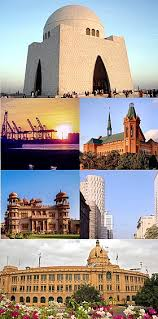
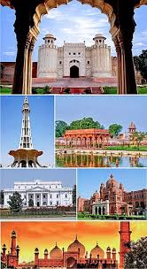
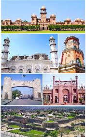

Is it possible to leave Karachi after living here for so long?”
― Steve Inskeep, Instant City: Life and Death in Karachifigcaption>
LAHORE

"Lahore was a different world in its own; the busy life, the rich history, the colourful culture, and the unfamiliar faces”
― Javaria Waseem, In the Shadows of Light at Night
ISLAMABAD
"We were impressed with the size and scope of the Persian Gulf as we traveled to Islamabad, Pakistan".
(Jon Porter)
PESHAWAR

“One should always be suspicious of a woman who tells you that her past was burnt in the flames of a schoolhouse in Peshawar.”
― Gyles Brandreth, Oscar Wilde and the Vatican Murders